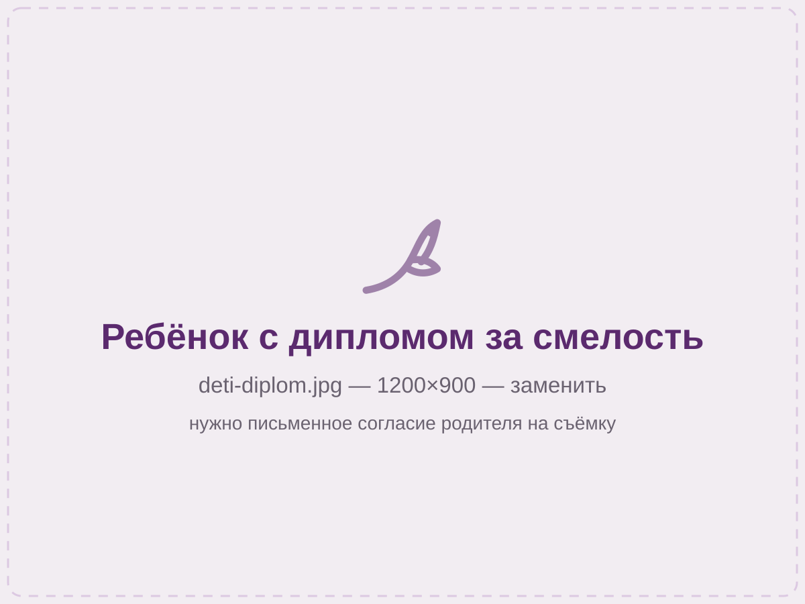

Прокалывали ребёнку ушки, очень понравилось отношение мастера, сразу расположила к себе нашу девочку. По окончанию ребёнку вручили диплом за смелость и сладкий подарок
Прокол ушей ребёнку в центре Красноярска
Три секунды на каждое ухо, без громкого щелчка. Серёжки уже в стоимости, выбираете их вместе с ребёнком. В конце дочка или сын получают диплом за смелость и сладкий подарок — уходят гордыми, а не заплаканными.
- 2500 ₽оба уха и серёжки
- 3 секна одно ухо
- с 3 летс родителем
- 19 летопыта у мастера

01 · Как проходит
Весь визит — 20–30 минут. Прокол из них занимает несколько секунд.
Что будет происходить
Мы никогда не держим ребёнка силой и не делаем прокол, пока он не согласится. Если сегодня не получилось — это нормально, придёте в другой раз, деньги за несостоявшийся прокол мы не берём.
-
Знакомство
Мастер сначала разговаривает с ребёнком, а не с вами. Показывает кабинет, даёт потрогать безопасные вещи. Ребёнку важно понять, что здесь ничего не случится внезапно.
-
Выбор серёжек
Показываем варианты из комплекта — ребёнок выбирает сам. Это ключевой момент: из «мне сейчас что-то сделают» визит превращается в «я сейчас выберу красивое».
-
Разметка и зеркало
Ставим точки маркером на обе мочки и даём зеркало вам и ребёнку. Смотрим вместе, проверяем симметрию, при желании двигаем. Пока точки не одобрены — дальше не идём.
-
Прокол
Мастер предупреждает и считает вслух. Прокол занимает около трёх секунд на ухо. Ребёнок сидит у вас на коленях или сам на кресле — как ему спокойнее.
-
Диплом и подарок
Вручаем именной диплом за смелость и сладкий подарок. Родителям отдаём печатную памятку по уходу и оставляем номер мастера в мессенджере — писать можно в любое время.
Ощущения 1 из 5 — короткий щипок, ребёнок обычно не успевает испугаться
Заживление 6–8 недель
02 · Стоимость
Одна цифра, без доплат на месте.
2500 ₽ — и больше ничего платить не нужно
Нам важно, чтобы вы знали сумму заранее и не столкнулись с «а серёжки отдельно» уже в кабинете.
- Прокол обоих ушей
- входит
- Серёжки-гвоздики на выбор
- входят
- Одноразовый стерильный картридж
- входит
- Памятка по уходу и связь с мастером
- входит
- Диплом за смелость и подарок
- входят
- Осмотр после прокола, если беспокоит
- бесплатно
- Итого
- 2 500 ₽
Прокол одного уха
Иногда ребёнок соглашается только на одно ухо. Мы делаем и так — второе проколем бесплатно, когда он будет готов, хоть через месяц. Приходите, доплачивать не нужно.
03 · Безопасность
Каждый пункт можно проверить глазами прямо на приёме.
Почему детям мы прокалываем не иглой
Взрослым мы прокалываем иглой — она проходит ткань чище. Но детям важнее другое: скорость. Прокол системой занимает секунды, ребёнок не успевает испугаться и не дёргается — а именно движение в момент прокола и приводит к несимметричным или косым отверстиям.
-
Картридж одноразовый, вскрываем при вас
Серёжка и стерильный картридж запечатаны вместе. Мы специально показываем упаковку до вскрытия — сам аппарат кожи не касается.
-
Бесшумная система
Без резкого щелчка, которого дети пугаются сильнее, чем самого прокола. Уточните точное название системы для сайта.
-
У мастера медицинское образование
Екатерина знает анатомию мочки и понимает, что делать при отёке или реакции. Работает с детьми 19 лет.
-
В кабинете только вы
Работаем по записи, поэтому никто не ждёт под дверью и ребёнка не торопят. Можно посидеть и освоиться сколько нужно.
Если вы принципиально хотите прокол иглой — скажите при записи, мы так тоже умеем и обсудим это с вами и с ребёнком.
04 · Подготовка
Самая частая причина слёз — не прокол, а ожидание.
Как поговорить с ребёнком заранее
За 19 лет мы заметили закономерность: спокойнее всего проходят те дети, с которыми дома поговорили честно и без нагнетания. Вот что помогает.
Что сказать
- «Будет как щипок, очень быстро — я досчитаю до трёх, и всё закончится»
- «Ты сама выберешь серёжки, какие захочешь»
- «Я всё время буду рядом и буду держать тебя за руку»
- «Если передумаешь, мы просто уйдём домой» — и правда уйти, если передумает
Чего лучше не говорить
- «Не бойся» — ребёнок слышит слово «бойся» и начинает искать опасность
- «Совсем не больно» — если окажется ощутимо, он перестанет верить вам в кабинете врача тоже
- «Будешь плакать — уйдём без серёжек» — превращает прокол в экзамен
- Не рассказывайте свои страшные истории из детства, даже в шутку
Приходите выспавшимися и не голодными
Уставший или голодный ребёнок переносит любую новую ситуацию тяжелее. Лучшее время — первая половина дня после завтрака. Мы работаем с 10:00, записывайтесь на утро.
05 · Уход
Полную памятку выдаём на бумаге. Здесь — главное.
Первые шесть недель
Ухаживает взрослый, не ребёнок. Обработка занимает полминуты и делается утром и вечером — проще привязать её к чистке зубов.
Что делать
- Обрабатывать мочки физраствором или хлоргексидином утром и вечером
- Мыть руки перед обработкой — это самое важное правило
- Собирать длинные волосы, чтобы не цеплялись за серёжки
- Осторожнее с одеждой через голову — снимать медленно
Чего не делать
- Не крутить серёжки «чтобы не приросли» — это мешает заживать
- Не снимать серёжки раньше 6 недель, даже на ночь
- Не мазать спиртом и перекисью — сушат и травмируют кожу
- Не купаться в бассейне и открытой воде первый месяц
Сомневаетесь — приходите, посмотрим
Небольшое покраснение и корочка в первые дни — часть заживления. Но если что-то беспокоит, не гадайте по фотографиям в интернете: напишите мастеру или зайдите в рабочие часы. Осмотр после нашего прокола бесплатный.
06 · Вопросы
Родители спрашивают чаще всего это.
Что обычно спрашивают родители
С какого возраста можно прокалывать уши?
Мы работаем с детьми с 3 лет. До этого возраста ребёнок не понимает, что происходит, и не может согласиться или отказаться — а нам важно и то, и другое. Оптимальный возраст, по нашему опыту, 4–7 лет: ребёнок уже договороспособен и при этом ещё не тревожится так, как подросток. Возрастную границу уточните у юриста перед публикацией.
Какие документы нужны?
Паспорт родителя и свидетельство о рождении ребёнка. Присутствие родителя или законного представителя обязательно — с бабушкой или няней прокол сделать не сможем без нотариальной доверенности.
А если ребёнок испугается и откажется прямо в кабинете?
Значит, не сегодня. Мы не уговариваем и тем более не держим. Придёте в другой раз, денег за несостоявшийся прокол не берём. По опыту, второй визит почти всегда проходит спокойно — ребёнок уже знает место и мастера.
Можно ли проколоть, если ребёнок недавно болел?
Лучше подождать две недели после выздоровления. На фоне ослабленного иммунитета заживление идёт дольше. Также переносим при температуре, обострении хронических болезней, воспалении или повреждении кожи на мочках.
Больно ли это?
Ощутимо, но очень коротко — примерно как резкий щипок, три секунды. Мочка уха — самая нечувствительная зона для прокола, там нет хряща. Большинство детей после первого уха спокойно соглашаются на второе.
Когда можно поменять серёжки?
Через 6–8 недель, когда канал полностью заживёт. Первую замену лучше сделать у нас — покажем, как это делается, и проверим, всё ли зажило. Это бесплатно.
А если проколы окажутся несимметричными?
Разметку мы согласуем с вами по зеркалу до прокола, и именно поэтому этот этап не пропускаем. Если результат вас не устроит, приходите — разберёмся и переделаем бесплатно.
07 · Запись
Напишите в WhatsApp — ответим в рабочие часы.
Записаться на прокол
Напишите возраст ребёнка и удобный день. Если сомневаетесь — приходите просто познакомиться и посмотреть кабинет, это бесплатно и ни к чему не обязывает.
Кирова, 37 — мы на цокольном этаже, вывеска видна только вблизи. С коляской спуск неудобный: позвоните, встретим и поможем.